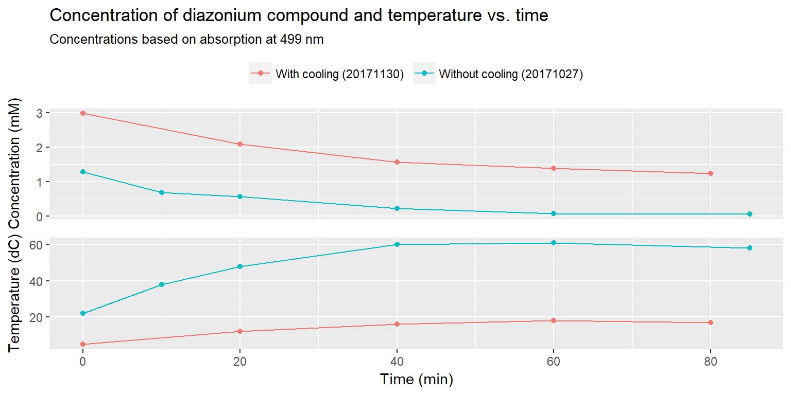

20171130 GrNH2 production in cooled setup
In the most recent graphene production it was clear, that the diazonium concentration quickly drops as the solvent starts to heat up. For this reason I had the workshop make a crude cooling setup for the electrochemical cell. A stainless steel pipe has been attached, in which I will flow -25 \(^\circ\)C ethanol to keep the solution cool, when passing 20 A between the electrodes.
To make it easier to detect the diazonium salt, the concentration will be increased to 5 mM.
Furthermore, I have been in doubt whether the solution of naphtalen-2-olate is oxidized from standing in air while the experiment is running. For this reason, in this experiment I will keep it under argon.
Protocol
library(tidyverse)
library(units)
V = set_units(1500, mL) # Volume of 0.1 M H2SO4 to be used
C_diazo = set_units(5, mmol/L)
M_diazo = set_units(322.8, mg/mmol)
m_diazo = V * C_diazo * M_diazo
C_naphtol = set_units(1.67, mmol/L)
V_naphtol = set_units(50, mL)
M_naphtol = set_units(144.17, mg/mmol) # 2-Naphtol
m_naphtol = C_naphtol * V_naphtol * M_naphtol
C_dye = set_units(set_units(1, mL) * C_diazo / set_units(1+9, mL), mmol/L)# (max)Preparing solutions
150 mL 1.0 M H2SO4 is diluted to 1500 mL to produce 0.1 M H2SO4.
A 1.67 mmol/L solution of 2-Naphtol is made by dissolving 12.04 mg 2-Naphtol in 10 mL 10 % NaOH and 40 mL H2O. The solution is purged with argon for 10 minutes and kept under an argon balloon.
The 5 mmol/L 4-(2-ammonioethyl)benzenediazonium solution is made by adding 2421 mg to the 1500 mL sulphuric acid solution.
Samples for UV-Vis can then be made easily by mixing 9 mL 2-Naphtol solution with 1 mL diazonium-solution to obtain a solution of the azo-dye (max conc. obtained is 0.5 mmol/L).
Gr-NH2 exfoliation
The electrochemical exfoliation of functionalised graphene will be done by positioning and 8x15 cm2 graphite foil between two large stainless steel electrodes and applying 10 V for 1 hour or more. Weigh the foil before electrolysis.
1 mL samples will be extracted with a syringe and put into the 2-Naphtol solution through a filter (to remove any graphite) every 20 minutes. At these points the temperature should also be noted.
The exfoliated graphene and remaining graphite foil is collected and washed several times with water (mix thoroughly with water, measure pH of the filtrate). Keep most of the graphene at this point and work from here only in smaller batches to test the freeze-drying procedure.
The graphene is ultrasonicated in DMF (perhaps ca. 1 g / 100 mL) and left overnight for graphite to sediment.
The upper 95 % of the solution is collected and centrifuged to collect most of the graphene. It is then ultrasonicated in water and freeze-dried.
Journal
The experiment was set up as described and near complete exfoliation achieved in 80 minutes. The graphite foil weighed 6.8515 g prior to exfoliation.
Results and discussion
The experimental conditions were noted during exfoliation, and samples extracted every 20 min to analyse diazonium concentration. The temperature stayed below 20 °C at all times, which should be great for keeping the diazonium compound active. The drop in current is due to the graphite foil shrinking as more and more graphene is exfoliated.
path = "data/raw_data/uvvis/20171130_GrNH2_azodye/"
echem_data <- read_csv("data/raw_data/electrochemistry/20171130_Gr-NH2_exfoliation.csv")
eps499 = 5.022 # L/cm*mmol, extincion coefficient for the azo-dye
data171130 <- tibble(file = list.files(path = path, pattern = "*.csv")) %>%
mutate(time = stringr::str_extract(file, "\\d{1,2}(?=min)") %>% as.numeric()) %>%
full_join(echem_data) %>%
mutate(data = map(paste0(path, file), read_delim, delim = ";", skip = 1)) %>%
unnest() %>%
mutate(region = ifelse(nm > 400, "Vis", "UV")) %>%
mutate(conc = A/eps499 * 10) # Multiplied by 10 to get the diazonium-concentration
knitr::kable(echem_data %>% select(-sample), format = "html", col.names = c("Time (min)", "Temp (°C)", "Current (A)", "Voltage (V)")) %>%
kableExtra::kable_styling(bootstrap_options = "striped")| Time (min) | Temp (°C) | Current (A) | Voltage (V) |
|---|---|---|---|
| 0 | 5 | 19.0 | 10 |
| 20 | 12 | 14.4 | 10 |
| 40 | 16 | 12.7 | 10 |
| 60 | 18 | 9.2 | 10 |
| 80 | 17 | 7.4 | 10 |
UV-Vis and diazonium concentration
The red azo-dye was succesfully formed in all cases, making it possible to measure the concentration of the diazonium salt in the exfoliation solution. In reality the dye-concentration is measured using the calibration done previously and multiplied by 10, due to the dilution of the dye.
data171130 %>%
filter(region == "Vis") %>%
mutate(time = as.factor(time)) %>%
ggplot(aes(nm, A, color = time)) +
geom_vline(xintercept = 499) +
geom_line() +
labs(color = "Time (min)", x = "Wavelength (nm)", y = "Absorption (a.u.)")
The evolution of diazonium concentration during the experiment is here compared with the previous exfoliation in an 1 mM solution where no active cooling was used.
# Read previous data for comparison
data171027 <- readRDS("data/derived_data/20171027.RData")
data_combined <- bind_rows(data171027 %>% mutate(date = "20171027"), data171130 %>% mutate(date = "20171130") %>% rename(cur = i, pot = u)) %>%
mutate(setup = ifelse(date == "20171130", "With cooling (20171130)", "Without cooling (20171027)"))
g1 <- data_combined %>%
filter(nm == 499) %>%
ggplot(aes(time, conc, color = setup)) +
geom_point() +
geom_line() +
theme(axis.text.x = element_blank(), axis.title.x = element_blank(), axis.ticks.x = element_blank(), legend.title = element_blank(), legend.position = "top") +
labs(y = "Concentration (mM)", title = "Concentration of diazonium compound and temperature vs. time", subtitle = "Concentrations based on absorption at 499 nm")
g2 <- data_combined %>%
ggplot(aes(time, temp, color = setup)) +
geom_point() +
geom_line() +
labs(x = "Time (min)", y = "Temperature (dC)") +
theme(legend.position = "none")
cowplot::plot_grid(g1, g2, align = "v", ncol = 1, rel_heights = c(1.4,1))